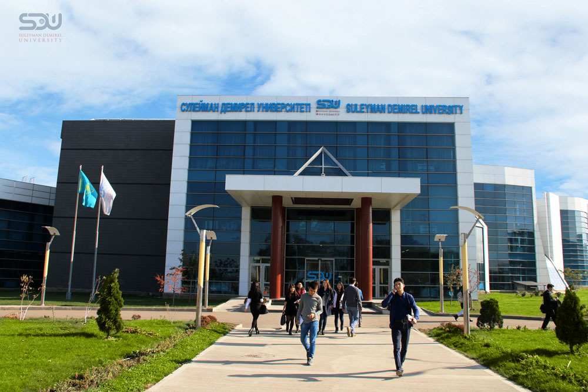

Univercity:

Suleyman Demirel University is a private university in Kaskelen, Almaty, Kazakhstan. It is named after Süleyman Demirel, the former prime minister and president of Turkey.

International University of Information Technologies is a university located in the Bostandyk district of Almaty, Kazakhstan. It is one of the leading universities in Kazakhstan in the field of ICT, was established in April 2009 on behalf of the President of the Republic of Kazakhstan.